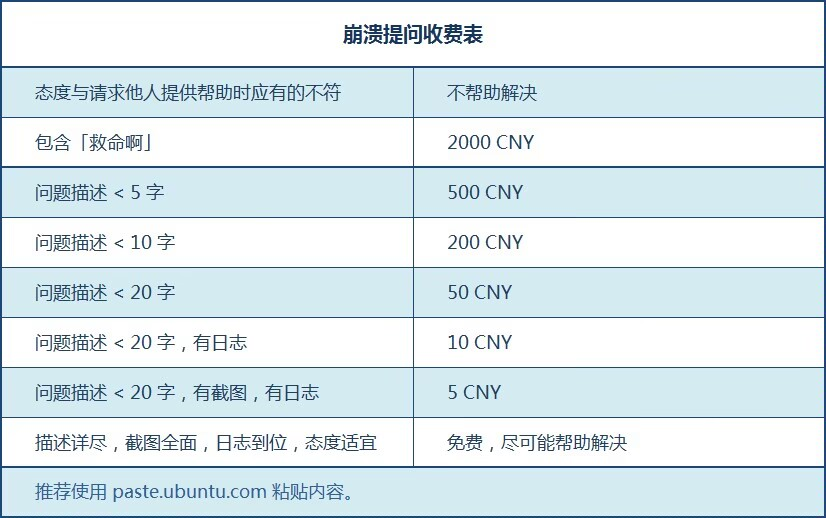
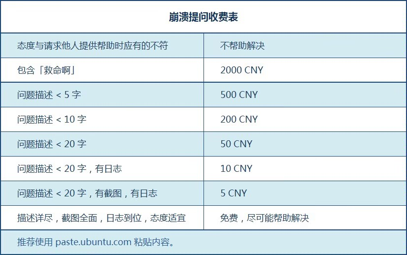

提问/自学 💪
省流
提问者一定要会提问✍✍✍✍✍✍
自学
善于搜索, 提问和捣鼓就是自学的本质
学校的老师教会了我们不懂就要问, 但是你是否想过你可以向电脑, 向搜索引擎, 向 AI 提问呢, 你要意识到问题是可以靠自己解决的, 而且解决问题带来的爽感不亚于实现功能, 所以你要有自学的意识, 只有当这个问题的难度真的超过了你所能处理的极限和搜索引擎的极限或是所需的时间精力成本过大, 这个时候才需要向群友提问
- 建议使用正常的浏览器(比如 Edge), 正常的搜索引擎(比如 bing), 正常的搜索工具(比如 DeepSeek, ChatGPT 这类 AI), 如果你还在使用360安全浏览器在百度搜索, 向各种来路不明的 AI 提问, 那我只能说ごたこう多幸をいのり祈ります
- 建议善用
Ctrl + F搜索和网页上方的全局搜索: 帮你快速在网页/文件中定位想要的内容 - 建议善用翻译软件(比如有道翻译), 遇到不会的单词时第一反应应该是查而不是问
"翻墙"
你要知道我们在中国是访问不了国外的一些网站的, 比如Google, Youtube, Twitter, Reddit, Discord 等等等等, 为什么呢, 你说中国人这么多傻逼也不少要是能随意和外国通信搞黄赌毒间谍对立歧视啥的那中国不炸了吗😡,
所以就立了一道墙,阻隔了双方的通信,
但是 ... 流淌在我们血液里的 ... 只有对知识的渴求🖐️😭🤚, 所以你还翻不翻? 你死都得翻😡, 但在此之前你需要了解一些基本的网络知识
然后就可以大致了解翻墙的原理
不过像 Github 这种的属于半墙不墙, 偶尔裸连能上, 主要是因为 DNS 污染等问题, 用一些简单的工具就能搞定, 比如 FastGithub, Steam++, steamcommunity 302 等等
至于怎么真翻, 原理大概就是找个能访问的国外代理服务器, 它帮你访问你���Ҫ�¨2�ѧϰ��来无法访问的网站, 然后把数据���给你, 所以当你�����发现要钱的时候也别觉得太坑���, 毕竟性质跟中国电信/移动差不多, 不过需求不大可以���买按流量计费的���, 接下来推荐几个好�的���Ҫ�¨比如2�ѧϰ��适合¨2�ѧϰ��ϰ��适合���ϰ���ϰ��, 就只能说这么多了(希望别被和谐
提问
当你能清晰的描述自己的问题的时候, 这往往意味着你对这个问题有了较为清楚的认识, 不仅方便别人后续的回答, 更多的情况是自己在准备提问资料的过程中理清了思绪顺便就把问题解决了
那么如何提问呢, 只需要如下要素就会有大佬来帮你了🥰
提问前
- 努力的证明: 先动手再问, 不做伸手党(不要觉得你跟大佬一问一答和谐友爱, 在旁人看来纯纯伸手党, 因为教程里全写了😡)
提问时
- 详细的信息: 别惜字如金, 能提供越多清晰详细信息越好
- 谦卑的语气: 请问...你好...
- 耐心的等待: 不是所有人都会吃饱没事干去爬几百层的楼的, 所以能解决你问题的人不一定能看到, 看到也不一定有空回, 有空也不一定想要回, 因为可能你问的不清楚, 一两句话也回答不清楚, 所以请尝试等待, 甚至多问几次(问的又随便, 发现没人回然后又在背后蛐蛐别人还有人类吗😡)
- 认真倾听: 个人建议你在问出这个问题后把qq的勿扰模式关了(并不是所有人都有@的习惯的), 不然你每次回应的 cd 超过 10min 可能不太好, 真有事也提前说出来, 又不是什么不能说的事(想象一下你上一秒还在跟别人聊的火热朝天, 然后别人突然消失了, 怎么喊都喊不回来, 若干小时后来突然来一句, "刚才去吃饭了/洗澡去了/...", 我想你的表情应该是😅)
- 给予反馈: 就算是帮不上忙的建议, 最好也回应例如“好像什么都没发生耶”, “报错了, 上面说...”之类的 (不然别人根本不知道你是没看到消息, 还是没解决问题, 又或是懒得理他, 甚至是问题解决了都没个信儿的)
- 将心比心: 问问自己"如果我是大佬那么这个人提的问题值得我解答吗还是说得不断追问最后发现是别人自己🐷了结果别人也没学到东西自己也浪费了时间"
提问后
- 复盘: 如果你解决了问题, 请告诉大家问题出在哪儿了, 这不仅降低了其他人踩坑的几率, 也满足了大家的好奇心, 如果没解决问题, 也可以留下一句类似
还是没整明白, 我再研究下的话, 这样别人好歹知道这个问题进行到什么程度了, 对你也会留下一个好的印象
 

小剧场
碎碎念(别看)
提问真的有那么难吗, 你把你遇到什么问题说明白了, 然后别人向你问话的时候及时回复, 然后语气温和一点不就好了? 怎么这么多人都这么变态的, 我突然意识到当你见多了牛鬼蛇神, 准备开始吐槽的时候是真的会被气笑, 因为我现在就真的被气笑了, 那种无法改变现状的无力与希望大家都会问问题的期盼交织在一起, 但转念又想起了自己见过的种种, 然后嘴角开始露出微笑, 最后控制不住的大笑, 不管你制图水平如何, 人品怎么样, 不会问问题就是不会问问题, 你们要是一直保持这么个吊儿郎当的状态只会劣币驱逐良币, 你这问题爱谁帮谁帮😡, 有的人虽然半天才回你, 但是只要聊起来人家就不会突然消失! 有的人虽然若隐若现, 但是他有事会跟你说! 有的人虽然没礼貌, 但是问题问的很清楚! 有的人虽然啥都不懂, 但是他提问的时候准备了很多资料! 天啊, 朋友, 虽然我们素未谋面, 但是我真的好想帮助你啊, 求你了, 让自己变得好被帮助一点好吗, 朋友😭写爽了😋
若隐若现型
兄弟你还在吗, 能不能尊重一下我😭
1 2 3 4 5 6 7 8 9 10 11 12 13 14 15 16 17 18 19 20 21 22 23 24 25 26 27 28 29 30 31 32 33 34 35 36 | |
惜字如金型
话疏了嗷
1 2 3 | |
自问自答型
虽然有点搞, 但是做的好
1 2 3 4 5 6 7 8 9 10 11 12 13 14 15 | |
注意隐私型
一般除了个别文件夹可能要马赛克糊一下, 大部分时候不用吝啬你的截图
1 2 | |
准备充分型
对于这类我的建议是先把要问的都发到自己 QQ 上, 之后再合并转发到群里, 不仅可以防止问题被聊天消息打断, 也能让想回答的人一下获取全部信息, 除非就是一些文字说明加几张图, 那直接发没事
1 2 3 4 | |
埋头捣鼓型
对于这类我的建议是给予反馈, 比如可以回复类似好的 我试试 等下, 我试下 之类的话
1 2 3 4 5 6 7 | |
神秘色彩型
除非有保密需求, 否则大部分情况这种都是 XY 问题, 也就是你在尝试解决 X 问题, 但是你觉得解决了 Y 就能解决 X, 于是你向群友询问 Y 怎么解决, 群友觉得你不明所以, 最后发现其实用 Z 方法就能解决 X 问题了
1 2 3 | |
爱搭不理型
有的孩子真的注意力一被吸引就啥都看不见了(
1 2 3 4 5 6 | |
时空回溯型
我能在拥有健忘症的情况下做出一张图吗
1 2 3 4 5 6 7 8 9 | |
松弛型
我能在不看教程只靠嘴皮子的情况下做出一张图吗
1 2 3 4 5 6 7 8 9 10 11 12 | |
好问题与蠢问题
虽然我不是提问大师, 但大部分时候你能做到提供详细的信息就已经很 ok 了(
蠢问题:
这样做可以吗 / xxx 那张图 xxx 效果怎么实现的
如果你没试过, 那你纯纯伸手党, 如果你试过, 那也请让别人知道你已经尝试过了, 这样他们也许会指出你的错误或者给你指明另一条路
好问题:
我刚才试了下发现如果 xxx(描述你做了什么), 游戏里就会变成 xxx(描述发生了什么), 但是我想做成 xxx 那样的效果(描述你的目的), 我以为 xxx 这样做就可以了(描述你的理解), 所以如果我想实现这个功能我该怎么做呢(表明问题), 如果有更好的方法也希望大佬能点拨我一下(表明进一步的需求), 谢谢大家(表明感激)
蠢问题:
当然这里我并没有批判大家的意思, 只是希望大家别频繁把群友当字典使
好问题:
据我观察有的人在吐槽的时候表达的内容比提问的时候还详细(笑
我草, 蔚蓝实体怎么这么多啊, 有什么表让我查查吗?